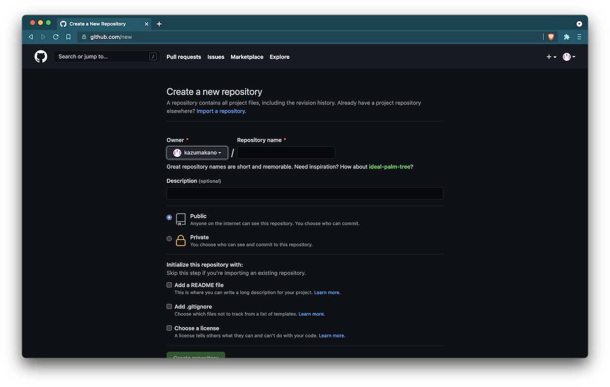
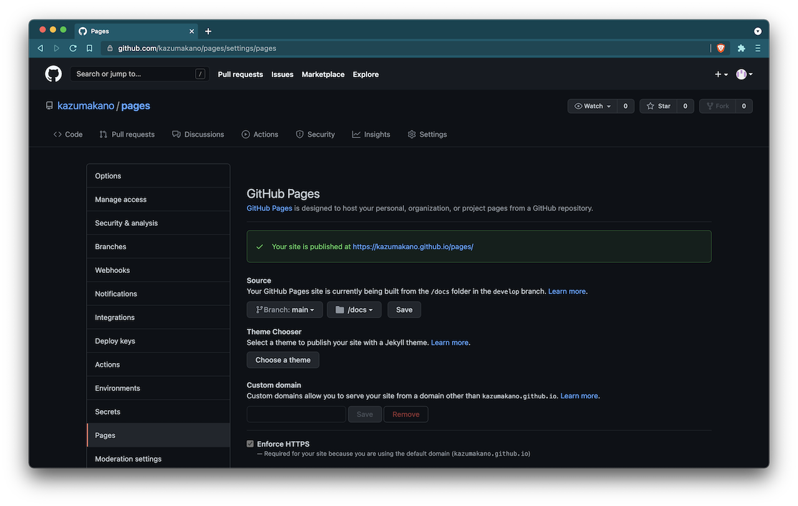

TOC
GitHub Pagesを利用してユーザサイトを公開する方法についてまとめます。
GitHub Pages
GitHub PagesはGitHubが提供している静的なサイトホスティングサービスです。 WordPressのようなCMSには対応していません。
最低限必要となるのは以下の2つです。
- GitHubアカウント
- サイトのソースコード
GitHub Pagesでサイトをホスティングするには、そのソースコードをGitHubのリポジトリに置く必要があります。
リポジトリごとに1つまでのサイトをホスティングできます。
また、任意のブランチのルートディレクトリあるいは/docsディレクトリをサイトのベースとして設定できます。
カスタムドメインを持っている場合はそれを使用することもできますが、デフォルトはusername.github.ioです。
デフォルトのドメイン使用時には勝手にHTTPS経由で配信してくれます。
GitHub PagesのサービスはFreeプランでも利用できます。
詳しくは公式のドキュメントを参照してください。
Create Repository
まずはリポジトリを作成します。
Repositories > New を選択すると以下のような画面が表示されます。 ここでリポジトリの初期設定を行います。 リポジトリ名はサイトのURLの一部になります。 これらの設定は後からでも変更できます。 
Push
続いて、サイトのソースコードをプッシュします。
ソースコードを管理しているディレクトリに移動します。
ベースのindex.htmlはdirnameディレクトリの直下あるいはdirname/docsディレクトリに置いてある必要があります。
cd dirname
Gitの設定ファイルを生成します。
git init
コミットします。
git add .
git commit -m "first commit"
プッシュします。
git branch -m main
git remote add origin https://github.com/username/repositoryname.git
git push -u origin main
Publish
最後に、リポジトリのGitHub Pagesのサービスを有効化してサイトを公開します。
Repositories > repositoryname > Settings > Pages を選択すると以下のような画面が表示されます。 サイトのベースとなるブランチとディレクトリを設定し、Save を選択します。 
数分後、https://username.github.io/repositoryname/にアクセスするとサイトが配信されていることが確認できます。